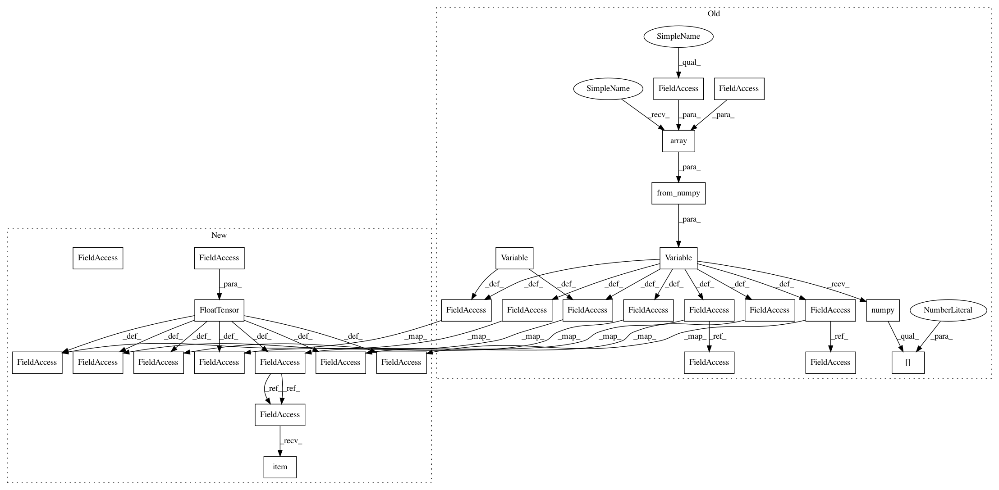

e4f051b6cce414997a97b896276563c4e361d0b8,ch09/04_cartpole_pg.py,,,#,35
Before Change
if len(batch_states) < BATCH_SIZE:
continue
states_v = Variable(torch.from_numpy(np.array(batch_states, dtype=np.float32)))
batch_actions_t = torch.LongTensor(batch_actions)
batch_scale_v = Variable(torch.FloatTensor(batch_scales))
optimizer.zero_grad()
logits_v = net(states_v)
log_prob_v = F.log_softmax(logits_v, dim=1)
log_prob_actions_v = batch_scale_v * log_prob_v[range(BATCH_SIZE), batch_actions_t]
loss_policy_v = -log_prob_actions_v.mean()
prob_v = F.softmax(logits_v, dim=1)
entropy_v = -(prob_v * log_prob_v).sum(dim=1).mean()
entropy_loss_v = -ENTROPY_BETA * entropy_v
loss_v = loss_policy_v + entropy_loss_v
loss_v.backward()
optimizer.step()
// calc KL-div
new_logits_v = net(states_v)
new_prob_v = F.softmax(new_logits_v, dim=1)
kl_div_v = -((new_prob_v / prob_v).log() * prob_v).sum(dim=1).mean()
writer.add_scalar("kl", kl_div_v.data.cpu().numpy()[0], step_idx)
grad_max = 0.0
grad_means = 0.0
grad_count = 0
for p in net.parameters():
grad_max = max(grad_max, p.grad.abs().max().data.cpu().numpy()[0])
grad_means += (p.grad ** 2).mean().sqrt().data.cpu().numpy()[0]
grad_count += 1
writer.add_scalar("baseline", baseline, step_idx)
writer.add_scalar("entropy", entropy_v.data.cpu().numpy()[0], step_idx)
writer.add_scalar("batch_scales", np.mean(batch_scales), step_idx)
writer.add_scalar("loss_entropy", entropy_loss_v.data.cpu().numpy()[0], step_idx)
writer.add_scalar("loss_policy", loss_policy_v.data.cpu().numpy()[0], step_idx)
writer.add_scalar("loss_total", loss_v.data.cpu().numpy()[0], step_idx)
writer.add_scalar("grad_l2", grad_means / grad_count, step_idx)
After Change
if len(batch_states) < BATCH_SIZE:
continue
states_v = torch.FloatTensor(batch_states)
batch_actions_t = torch.LongTensor(batch_actions)
batch_scale_v = torch.FloatTensor(batch_scales)
optimizer.zero_grad()
logits_v = net(states_v)
log_prob_v = F.log_softmax(logits_v, dim=1)
log_prob_actions_v = batch_scale_v * log_prob_v[range(BATCH_SIZE), batch_actions_t]
loss_policy_v = -log_prob_actions_v.mean()
prob_v = F.softmax(logits_v, dim=1)
entropy_v = -(prob_v * log_prob_v).sum(dim=1).mean()
entropy_loss_v = -ENTROPY_BETA * entropy_v
loss_v = loss_policy_v + entropy_loss_v
loss_v.backward()
optimizer.step()
// calc KL-div
new_logits_v = net(states_v)
new_prob_v = F.softmax(new_logits_v, dim=1)
kl_div_v = -((new_prob_v / prob_v).log() * prob_v).sum(dim=1).mean()
writer.add_scalar("kl", kl_div_v.item(), step_idx)
grad_max = 0.0
grad_means = 0.0
grad_count = 0
for p in net.parameters():
grad_max = max(grad_max, p.grad.abs().max().item())
grad_means += (p.grad ** 2).mean().sqrt().item()
grad_count += 1
writer.add_scalar("baseline", baseline, step_idx)
writer.add_scalar("entropy", entropy_v.item(), step_idx)
writer.add_scalar("batch_scales", np.mean(batch_scales), step_idx)
writer.add_scalar("loss_entropy", entropy_loss_v.item(), step_idx)
writer.add_scalar("loss_policy", loss_policy_v.item(), step_idx)
writer.add_scalar("loss_total", loss_v.item(), step_idx)
writer.add_scalar("grad_l2", grad_means / grad_count, step_idx)
In pattern: SUPERPATTERN
Frequency: 3
Non-data size: 29
Instances
Project Name: PacktPublishing/Deep-Reinforcement-Learning-Hands-On
Commit Name: e4f051b6cce414997a97b896276563c4e361d0b8
Time: 2018-04-27
Author: max.lapan@gmail.com
File Name: ch09/04_cartpole_pg.py
Class Name:
Method Name:
Project Name: PacktPublishing/Deep-Reinforcement-Learning-Hands-On
Commit Name: 171e9e18a10f2daea090bc6f4815db41072d66b6
Time: 2018-04-27
Author: max.lapan@gmail.com
File Name: ch10/01_cartpole_pg.py
Class Name:
Method Name:
Project Name: PacktPublishing/Deep-Reinforcement-Learning-Hands-On
Commit Name: e4f051b6cce414997a97b896276563c4e361d0b8
Time: 2018-04-27
Author: max.lapan@gmail.com
File Name: ch09/04_cartpole_pg.py
Class Name:
Method Name:
Project Name: PacktPublishing/Deep-Reinforcement-Learning-Hands-On
Commit Name: d5b0cd8e7960c247bb7c5b7c832358f8831780fb
Time: 2018-04-29
Author: max.lapan@gmail.com
File Name: ch15/03_train_trpo.py
Class Name:
Method Name: